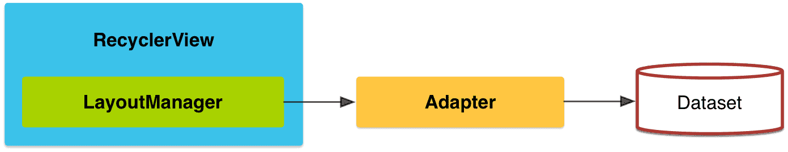

RecyclerView是ListView的升级版，它具备了更好的性能，且更容易使用。和ListView一样，RecyclerView是用来显示大量数据的容器，并通过复用有限数量的View，来提高滚动时的性能。当你的视图上的元素经常动态的且有规律的改变时候，可以使用RecyclerView控件。
与ListView不同的是RecyclerView现在不再负责布局，只专注于复用机制，布局交由LayoutManager来管理。 RecyclerView仍然通过Adapter来获取需要显示的对象。

要使用RecyclerView组件，创建Adapter不再继承自BaseAdapter，而是应该继承自RecyclerView.Adapter类，并且最好指定一个继承自RecyclerView.ViewHolder的范型，Adapter不再要求你返回一个View，而是一个ViewHolder。
继承自Adapter后，需要实现3个抽象方法：
// 当RecyclerView需要一个ViewHolder时会回调该方法，如果有可复用的View则该方法不会得倒回调
public RecyclerView.ViewHolder onCreateViewHolder(ViewGroup viewGroup, int i)；
// 当一个View需要出现在屏幕上时，该方法会被回调，你需要在该方法中根据数据来更改视图
public void onBindViewHolder(RecyclerView.ViewHolder viewHolder, int i)；
// 用于告诉RecyclerView有多个视图需要显示
public int getItemCount()；
新的Adapter和原有的Adapter并没有太多的差别，只是不再需要我们写复用判断的逻辑，因为复用逻辑其实都是相似的，它已经有了自身的实现。和原有的Adapter一样，仍然可以通过notifyDataSetChanged来刷新UI，通过getItemViewType来获取对应位置的类型，但是它不再需要你指定有多少类型了，因为该方法已经能够判断出有多少类型。新增的onViewRecycled方法可以让使用者监听View被移除屏幕的时机，并且还提供了一个AdapterDataObserver的观察者，对外提供数据改变时的回调。
ViewHolder是对所有的单个item的封装，不仅包含了item需要显示的View，并且还包含和item相关的其它数据，例如：当前的position、之前的position、即将显示的position、被回收的次数、View的类型、是否处于显示中等信息。创建一个ViewHolder需要传递一个View对象，这个View就是该holder的显示视图，该View中通常会包含一些子视图，我们最好把这些子视图都记录在holder中，便于复用时设置不同的数据。
RecyclerView不再对布局进行管理，而是通过LayoutManager管理布局，我们可以通过继承自LayoutManager来实现特殊的布局，系统提供了三种常用的布局管理器：
并且每一种都可以设置横行和纵向的布局，可惜的均不能添加header，如果要添加header，我们可以在Adapter中使用不同的类型来达到该效果。
RecyclerView默认提供了item的增加和删除的动画效果，如果我们使用自定义的动画，需要继承继承RecyclerView.ItemAnimator类，时候时，通过RecyclerView.setItemAnimator()方法来设置我们自定义的动画。
在实现扁平化的UI处理上，通常离不开阴影和圆角，我们通常是让美工提供一个带有阴影和圆角效果的背景图片，现在我们有了更好的实现方式，那就是CardView。
CardView实际是一个FrameLayout类的子类，它为视图提供卡片样式，并保持在不同平台上拥有统一的风格。CardView组件可以设定阴影和圆角。
我们可以使用cardElevation属性在xml布局中设置阴影效果，在代码中可以通过setCardElevation达到同样的效果。阴影的设置和Android L中的Z属性类似。
设置圆角也相当容易，在xml中通过cardCornerRadius来设置，在代码中则使用setRadius，圆角的设置和Android L中的剪裁很相似。
如果我们想设置cardview的背景，请注意使用carBackgroundColor方法，setBackgroundColor也许会影响我们的圆角效果
Toolbar是android L引入的一个新控件，用于取代ActionBar，它提供了ActionBar类似的功能，但是更灵活。不像ActionBar那么固定，Toolbar更像是一般的View元素，可以被放置在view树体系的任意位置，可以应用动画，可以跟着ScrollView滚动，可以与布局中的其他View交互。当然，你还可以用Toolbar替换掉ActionBar，只需调用Activity.setActionBar()。
为了兼容更多的设备一般我们都是通过AppCompat中的android.support.v7.widget.Toolbar来使用Toolbar。
有两种使用Toolbar的方式：
如果你要将Toolbar当作actionbar来使用，你首先要去掉actionbar，最简单的方法是使用Theme.AppCompat.NoActionBar主题。或者是设置主题的属性android:windowNoTitle为true。然后在Activity的onCreate中调用setSupportActionBar(toolbar)，原本应该出现在ActionBar上的menu会自动出现在actionbar上。
Toolbar的高度、宽度、背景颜色等等一切View的属性完全取决于你，这都是因为Toolbar本质上只是个ViewGroup。将Toolbar当作一个独立的控件来使用是不需要去掉actionbar的（两者可以共存），可以使用任意主题。但是在这种情况下，menu菜单并不会自动的显示在Toolbar上，Toolbar也不会响应菜单的回调函数，如果你想让menu菜单项显示在Toolbar上，必须手动inflate menu。
toolbar.setOnMenuItemClickListener(new Toolbar.OnMenuItemClickListener() {
@Override
public boolean onMenuItemClick(MenuItem item) {
// 处理menu事件
return true;
}
});
// 创建一个menu添加到toolbar上
toolbar.inflateMenu(R.menu.your_toolbar_menu);